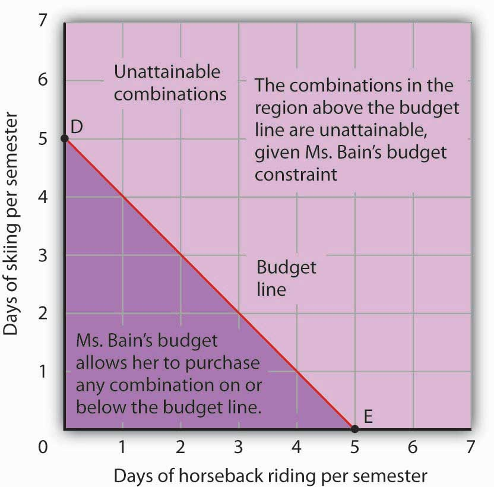
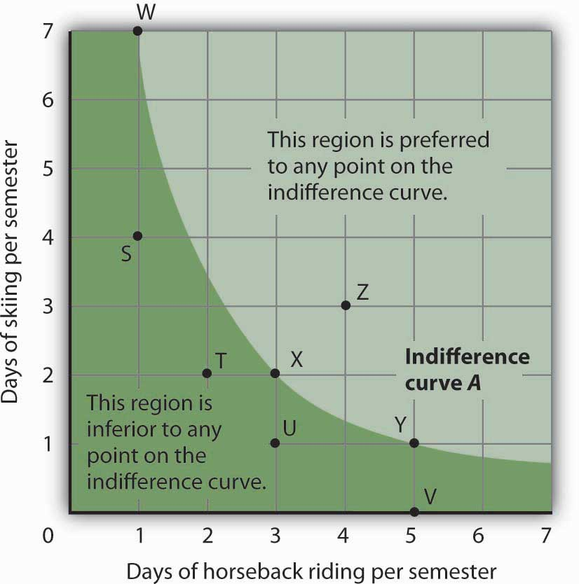
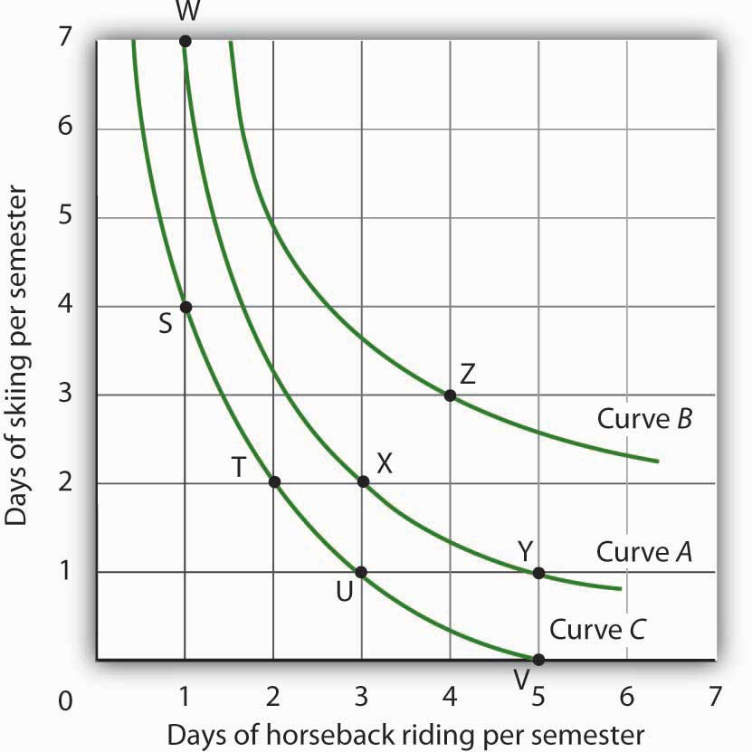
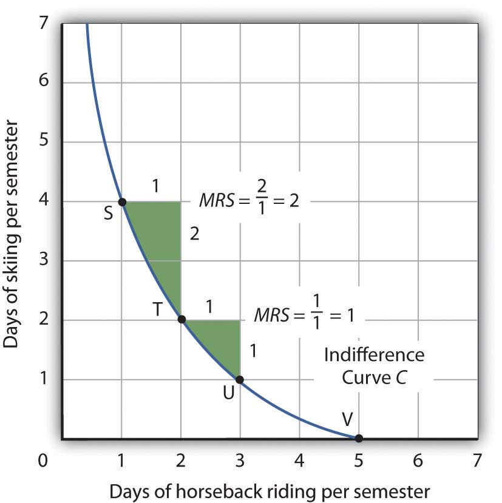
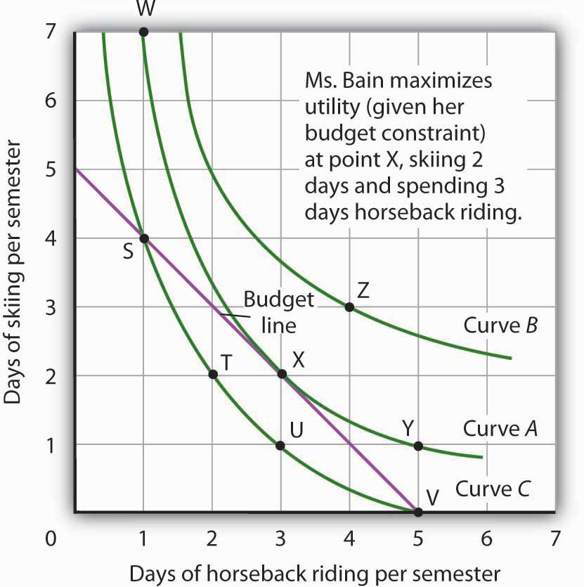
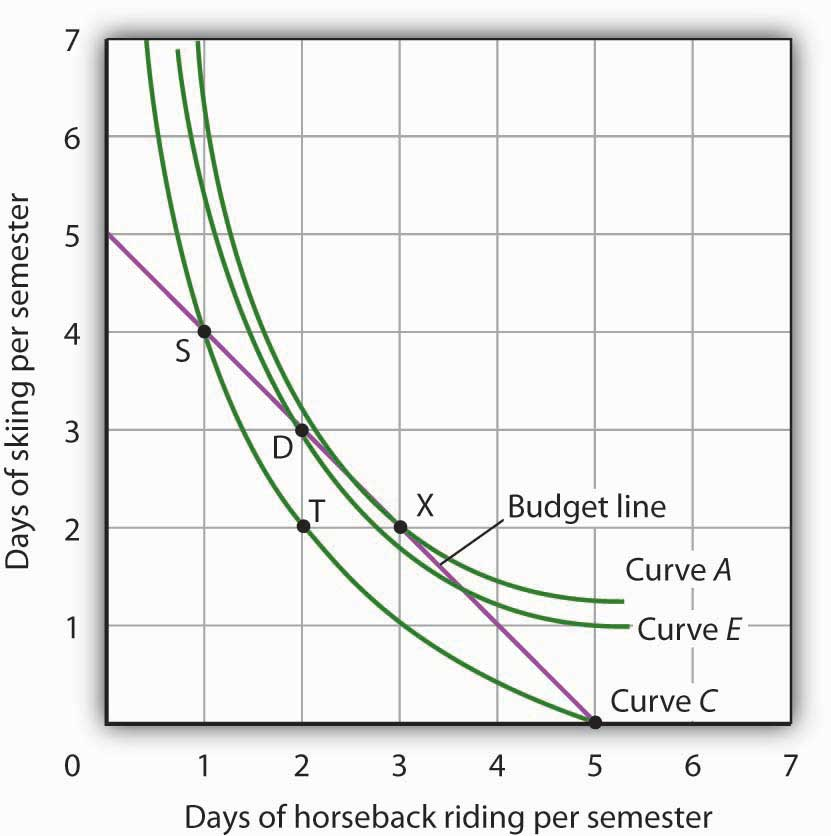
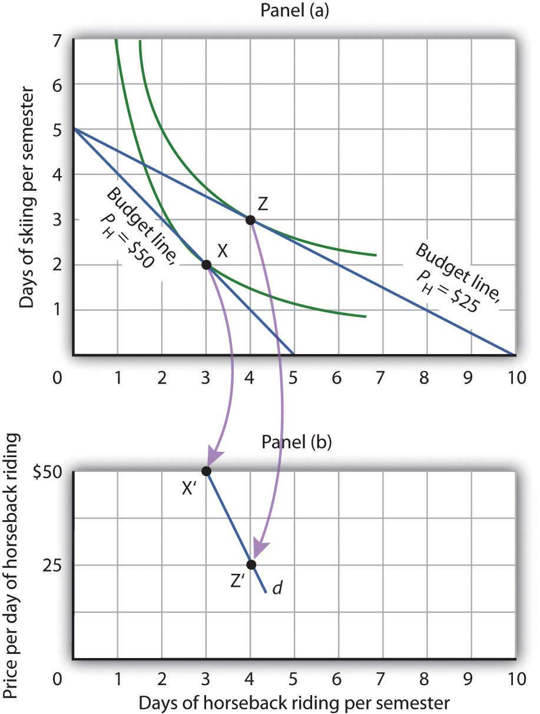

You are in the checkout line at the grocery store when your eyes wander over to the ice cream display. It is a hot day and you could use something to cool you down before you get into your hot car. The problem is that you have left your checkbook and credit and debit cards at home—on purpose, actually, because you have decided that you only want to spend $20 today at the grocery store. You are uncertain whether or not you have brought enough cash with you to pay for the items that are already in your cart. You put the ice cream bar into your cart and tell the clerk to let you know if you go over $20 because that is all you have. He rings it up and it comes to $22. You have to make a choice. You decide to keep the ice cream and ask the clerk if he would mind returning a box of cookies to the shelf.
We all engage in these kinds of choices every day. We have budgets and must decide how to spend them. The model of utility theory that economists have constructed to explain consumer choice assumes that consumers will try to maximize their utility. For example, when you decided to keep the ice cream bar and return the cookies, you, consciously or not, applied the marginal decision rule to the problem of maximizing your utility: You bought the ice cream because you expect that eating it will give you greater satisfaction than would consuming the box of cookies.
Utility theory provides insights into demand. It lets us look behind demand curves to see how utility-maximizing consumers can be expected to respond to price changes. While the focus of this chapter is on consumers making decisions about what goods and services to buy, the same model can be used to understand how individuals make other types of decisions, such as how much to work and how much of their incomes to spend now or to sock away for the future.
We can approach the analysis of utility maximization in two ways. The first two sections of the chapter cover the marginal utility concept, while the final section examines an alternative approach using indifference curves.
Why do you buy the goods and services you do? It must be because they provide you with satisfaction—you feel better off because you have purchased them. Economists call this satisfaction utility.
The concept of utility is an elusive one. A person who consumes a good such as peaches gains utility from eating the peaches. But we cannot measure this utility the same way we can measure a peach’s weight or calorie content. There is no scale we can use to determine the quantity of utility a peach generates.
Francis Edgeworth, one of the most important contributors to the theory of consumer behavior, imagined a device he called a hedonimeter (after hedonism, the pursuit of pleasure):
“[L]et there be granted to the science of pleasure what is granted to the science of energy; to imagine an ideally perfect instrument, a psychophysical machine, continually registering the height of pleasure experienced by an individual…. From moment to moment the hedonimeter varies; the delicate index now flickering with the flutter of passions, now steadied by intellectual activity, now sunk whole hours in the neighborhood of zero, or momentarily springing up towards infinity.”Francis Y. Edgeworth, Mathematical Psychics: An Essay on the Application of Mathematics to the Moral Sciences (New York: Augustus M. Kelley, 1967), p. 101. First Published 1881.
Perhaps some day a hedonimeter will be invented. The utility it measures will not be a characteristic of particular goods, but rather of each consumer’s reactions to those goods. The utility of a peach exists not in the peach itself, but in the preferences of the individual consuming the peach. One consumer may wax ecstatic about a peach; another may say it tastes OK.
When we speak of maximizing utility, then, we are speaking of the maximization of something we cannot measure. We assume, however, that each consumer acts as if he or she can measure utility and arranges consumption so that the utility gained is as high as possible.
If we could measure utility, total utilityThe number of units of utility that a consumer gains from consuming a given quantity of a good, service, or activity during a particular time period. would be the number of units of utility that a consumer gains from consuming a given quantity of a good, service, or activity during a particular time period. The higher a consumer’s total utility, the greater that consumer’s level of satisfaction.
Panel (a) of Figure 7.1 "Total Utility and Marginal Utility Curves" shows the total utility Henry Higgins obtains from attending movies. In drawing his total utility curve, we are imagining that he can measure his total utility. The total utility curve shows that when Mr. Higgins attends no movies during a month, his total utility from attending movies is zero. As he increases the number of movies he sees, his total utility rises. When he consumes 1 movie, he obtains 36 units of utility. When he consumes 4 movies, his total utility is 101. He achieves the maximum level of utility possible, 115, by seeing 6 movies per month. Seeing a seventh movie adds nothing to his total utility.
Figure 7.1 Total Utility and Marginal Utility Curves

Panel (a) shows Henry Higgins’s total utility curve for attending movies. It rises as the number of movies increases, reaching a maximum of 115 units of utility at 6 movies per month. Marginal utility is shown in Panel (b); it is the slope of the total utility curve. Because the slope of the total utility curve declines as the number of movies increases, the marginal utility curve is downward sloping.
Mr. Higgins’s total utility rises at a decreasing rate. The rate of increase is given by the slope of the total utility curve, which is reported in Panel (a) of Figure 7.1 "Total Utility and Marginal Utility Curves" as well. The slope of the curve between 0 movies and 1 movie is 36 because utility rises by this amount when Mr. Higgins sees his first movie in the month. It is 28 between 1 and 2 movies, 22 between 2 and 3, and so on. The slope between 6 and 7 movies is zero; the total utility curve between these two quantities is horizontal.
The amount by which total utility rises with consumption of an additional unit of a good, service, or activity, all other things unchanged, is marginal utilityThe amount by which total utility rises with consumption of an additional unit of a good, service, or activity, all other things unchanged.. The first movie Mr. Higgins sees increases his total utility by 36 units. Hence, the marginal utility of the first movie is 36. The second increases his total utility by 28 units; its marginal utility is 28. The seventh movie does not increase his total utility; its marginal utility is zero. Notice that in the table marginal utility is listed between the columns for total utility because, similar to other marginal concepts, marginal utility is the change in utility as we go from one quantity to the next. Mr. Higgins’s marginal utility curve is plotted in Panel (b) of Figure 7.1 "Total Utility and Marginal Utility Curves" The values for marginal utility are plotted midway between the numbers of movies attended. The marginal utility curve is downward sloping; it shows that Mr. Higgins’s marginal utility for movies declines as he consumes more of them.
Mr. Higgins’s marginal utility from movies is typical of all goods and services. Suppose that you are really thirsty and you decide to consume a soft drink. Consuming the drink increases your utility, probably by a lot. Suppose now you have another. That second drink probably increases your utility by less than the first. A third would increase your utility by still less. This tendency of marginal utility to decline beyond some level of consumption during a period is called the law of diminishing marginal utilityThis tendency of marginal utility to decline beyond some level of consumption during a period.. This law implies that all goods and services eventually will have downward-sloping marginal utility curves. It is the law that lies behind the negatively sloped marginal benefit curve for consumer choices that we examined in the chapter on markets, maximizers, and efficiency.
One way to think about this effect is to remember the last time you ate at an “all you can eat” cafeteria-style restaurant. Did you eat only one type of food? Did you consume food without limit? No, because of the law of diminishing marginal utility. As you consumed more of one kind of food, its marginal utility fell. You reached a point at which the marginal utility of another dish was greater, and you switched to that. Eventually, there was no food whose marginal utility was great enough to make it worth eating, and you stopped.
What if the law of diminishing marginal utility did not hold? That is, what would life be like in a world of constant or increasing marginal utility? In your mind go back to the cafeteria and imagine that you have rather unusual preferences: Your favorite food is creamed spinach. You start with that because its marginal utility is highest of all the choices before you in the cafeteria. As you eat more, however, its marginal utility does not fall; it remains higher than the marginal utility of any other option. Unless eating more creamed spinach somehow increases your marginal utility for some other food, you will eat only creamed spinach. And until you have reached the limit of your body’s capacity (or the restaurant manager’s patience), you will not stop. Failure of marginal utility to diminish would thus lead to extraordinary levels of consumption of a single good to the exclusion of all others. Since we do not observe that happening, it seems reasonable to assume that marginal utility falls beyond some level of consumption.
Economists assume that consumers behave in a manner consistent with the maximization of utility. To see how consumers do that, we will put the marginal decision rule to work. First, however, we must reckon with the fact that the ability of consumers to purchase goods and services is limited by their budgets.
The total utility curve in Figure 7.1 "Total Utility and Marginal Utility Curves" shows that Mr. Higgins achieves the maximum total utility possible from movies when he sees six of them each month. It is likely that his total utility curves for other goods and services will have much the same shape, reaching a maximum at some level of consumption. We assume that the goal of each consumer is to maximize total utility. Does that mean a person will consume each good at a level that yields the maximum utility possible?
The answer, in general, is no. Our consumption choices are constrained by the income available to us and by the prices we must pay. Suppose, for example, that Mr. Higgins can spend just $25 per month for entertainment and that the price of going to see a movie is $5. To achieve the maximum total utility from movies, Mr. Higgins would have to exceed his entertainment budget. Since we assume that he cannot do that, Mr. Higgins must arrange his consumption so that his total expenditures do not exceed his budget constraintA restriction that total spending cannot exceed the budget available.: a restriction that total spending cannot exceed the budget available.
Suppose that in addition to movies, Mr. Higgins enjoys concerts, and the average price of a concert ticket is $10. He must select the number of movies he sees and concerts he attends so that his monthly spending on the two goods does not exceed his budget.
Individuals may, of course, choose to save or to borrow. When we allow this possibility, we consider the budget constraint not just for a single period of time but for several periods. For example, economists often examine budget constraints over a consumer’s lifetime. A consumer may in some years save for future consumption and in other years borrow on future income for present consumption. Whatever the time period, a consumer’s spending will be constrained by his or her budget.
To simplify our analysis, we shall assume that a consumer’s spending in any one period is based on the budget available in that period. In this analysis consumers neither save nor borrow. We could extend the analysis to cover several periods and generate the same basic results that we shall establish using a single period. We will also carry out our analysis by looking at the consumer’s choices about buying only two goods. Again, the analysis could be extended to cover more goods and the basic results would still hold.
Because consumers can be expected to spend the budget they have, utility maximization is a matter of arranging that spending to achieve the highest total utility possible. If a consumer decides to spend more on one good, he or she must spend less on another in order to satisfy the budget constraint.
The marginal decision rule states that an activity should be expanded if its marginal benefit exceeds its marginal cost. The marginal benefit of this activity is the utility gained by spending an additional $1 on the good. The marginal cost is the utility lost by spending $1 less on another good.
How much utility is gained by spending another $1 on a good? It is the marginal utility of the good divided by its price. The utility gained by spending an additional dollar on good X, for example, is
This additional utility is the marginal benefit of spending another $1 on the good.
Suppose that the marginal utility of good X is 4 and that its price is $2. Then an extra $1 spent on X buys 2 additional units of utility ( ). If the marginal utility of good X is 1 and its price is $2, then an extra $1 spent on X buys 0.5 additional units of utility ( ).
The loss in utility from spending $1 less on another good or service is calculated the same way: as the marginal utility divided by the price. The marginal cost to the consumer of spending $1 less on a good is the loss of the additional utility that could have been gained from spending that $1 on the good.
Suppose a consumer derives more utility by spending an additional $1 on good X rather than on good Y:
Equation 7.1
The marginal benefit of shifting $1 from good Y to the consumption of good X exceeds the marginal cost. In terms of utility, the gain from spending an additional $1 on good X exceeds the loss in utility from spending $1 less on good Y. The consumer can increase utility by shifting spending from Y to X.
As the consumer buys more of good X and less of good Y, however, the marginal utilities of the two goods will change. The law of diminishing marginal utility tells us that the marginal utility of good X will fall as the consumer consumes more of it; the marginal utility of good Y will rise as the consumer consumes less of it. The result is that the value of the left-hand side of Equation 7.1 will fall and the value of the right-hand side will rise as the consumer shifts spending from Y to X. When the two sides are equal, total utility will be maximized. In terms of the marginal decision rule, the consumer will have achieved a solution at which the marginal benefit of the activity (spending more on good X) is equal to the marginal cost:
Equation 7.2
We can extend this result to all goods and services a consumer uses. Utility maximization requires that the ratio of marginal utility to price be equal for all of them, as suggested in Equation 7.3:
Equation 7.3
Equation 7.3 states the utility-maximizing conditionUtility is maximized when total outlays equal the budget available and when the ratios of marginal utilities to prices are equal for all goods and services.: Utility is maximized when total outlays equal the budget available and when the ratios of marginal utilities to prices are equal for all goods and services.
Consider, for example, the shopper introduced in the opening of this chapter. In shifting from cookies to ice cream, the shopper must have felt that the marginal utility of spending an additional dollar on ice cream exceeded the marginal utility of spending an additional dollar on cookies. In terms of Equation 7.1, if good X is ice cream and good Y is cookies, the shopper will have lowered the value of the left-hand side of the equation and moved toward the utility-maximizing condition, as expressed by Equation 7.1.
If we are to apply the marginal decision rule to utility maximization, goods must be divisible; that is, it must be possible to buy them in any amount. Otherwise we cannot meaningfully speak of spending $1 more or $1 less on them. Strictly speaking, however, few goods are completely divisible.
Even a small purchase, such as an ice cream bar, fails the strict test of being divisible; grocers generally frown on requests to purchase one-half of a $2 ice cream bar if the consumer wants to spend an additional dollar on ice cream. Can a consumer buy a little more movie admission, to say nothing of a little more car?
In the case of a car, we can think of the quantity as depending on characteristics of the car itself. A car with a compact disc player could be regarded as containing “more car” than one that has only a cassette player. Stretching the concept of quantity in this manner does not entirely solve the problem. It is still difficult to imagine that one could purchase “more car” by spending $1 more.
Remember, though, that we are dealing with a model. In the real world, consumers may not be able to satisfy Equation 7.3 precisely. The model predicts, however, that they will come as close to doing so as possible.
A college student, Ramón Juárez, often purchases candy bars or bags of potato chips between classes; he tries to limit his spending on these snacks to $8 per week. A bag of chips costs $0.75 and a candy bar costs $0.50 from the vending machines on campus. He has been purchasing an average of 6 bags of chips and 7 candy bars each week. Mr. Juárez is a careful maximizer of utility, and he estimates that the marginal utility of an additional bag of chips during a week is 6. In your answers use B to denote candy bars and C to denote potato chips.
In preparation for sitting in the slow, crowded lanes for single-occupancy-vehicles, T. J. Zane used to stop at his favorite coffee kiosk to buy a $2 cup of coffee as he headed off to work on Interstate 15 in the San Diego area. Since 1996, an experiment in road pricing has caused him and others to change their ways—and to raise their total utility.
Before 1996, only car-poolers could use the specially marked high-occupancy-vehicles lanes. With those lanes nearly empty, traffic authorities decided to allow drivers of single-occupancy-vehicles to use those lanes, so long as they paid a price. Now, electronic signs tell drivers how much it will cost them to drive on the special lanes. The price is recalculated every 6 minutes depending on the traffic. On one morning during rush hour, it varied from $1.25 at 7:10 a.m., to $1.50 at 7:16 a.m., to $2.25 at 7:22 a.m., and to $2.50 at 7:28 a.m. The increasing tolls over those few minutes caused some drivers to opt out and the toll fell back to $1.75 and then increased to $2 a few minutes later. Drivers do not have to stop to pay the toll since radio transmitters read their FasTrak transponders and charge them accordingly.
When first instituted, these lanes were nicknamed the “Lexus lanes,” on the assumption that only wealthy drivers would use them. Indeed, while the more affluent do tend to use them heavily, surveys have discovered that they are actually used by drivers of all income levels.
Mr. Zane, a driver of a 1997 Volkswagen Jetta, is one commuter who chooses to use the new option. He explains his decision by asking, “Isn’t it worth a couple of dollars to spend an extra half-hour with your family?” He continues, “That’s what I used to spend on a cup of coffee at Starbucks. Now I’ve started bringing my own coffee and using the money for the toll.”
We can explain his decision using the model of utility-maximizing behavior; Mr. Zane’s out-of-pocket commuting budget constraint is about $2. His comment tells us that he realized that the marginal utility of spending an additional 30 minutes with his family divided by the $2 toll was higher than the marginal utility of the store-bought coffee divided by its $2 price. By reallocating his $2 commuting budget, the gain in utility of having more time at home exceeds the loss in utility from not sipping premium coffee on the way to work.
From this one change in behavior, we do not know whether or not he is actually maximizing his utility, but his decision and explanation are certainly consistent with that goal.
Source: John Tierney, “The Autonomist Manifesto (Or, How I learned to Stop Worrying and Love the Road),” New York Times Magazine, September 26, 2004, 57–65.
In order for the ratios of marginal utility to price to be equal, the marginal utility of a candy bar must be 4. Let the marginal utility and price of candy bars be MUB and PB, respectively, and the marginal utility and price of a bag of potato chips be MUC and PC, respectively. Then we want
We know that PC is $0.75 and PB equals $0.50. We are told that MUC is 6. Thus
Solving the equation for MUB, we find that it must equal 4.
Choices that maximize utility—that is, choices that follow the marginal decision rule—generally produce downward-sloping demand curves. This section shows how an individual’s utility-maximizing choices can lead to a demand curve.
Suppose, for simplicity, that Mary Andrews consumes only apples, denoted by the letter A, and oranges, denoted by the letter O. Apples cost $2 per pound and oranges cost $1 per pound, and her budget allows her to spend $20 per month on the two goods. We assume that Ms. Andrews will adjust her consumption so that the utility-maximizing condition holds for the two goods: The ratio of marginal utility to price is the same for apples and oranges. That is,
Equation 7.4
Here MUA and MUO are the marginal utilities of apples and oranges, respectively. Her spending equals her budget of $20 per month; suppose she buys 5 pounds of apples and 10 of oranges.
Now suppose that an unusually large harvest of apples lowers their price to $1 per pound. The lower price of apples increases the marginal utility of each $1 Ms. Andrews spends on apples, so that at her current level of consumption of apples and oranges
Equation 7.5
Ms. Andrews will respond by purchasing more apples. As she does so, the marginal utility she receives from apples will decline. If she regards apples and oranges as substitutes, she will also buy fewer oranges. That will cause the marginal utility of oranges to rise. She will continue to adjust her spending until the marginal utility per $1 spent is equal for both goods:
Equation 7.6
Suppose that at this new solution, she purchases 12 pounds of apples and 8 pounds of oranges. She is still spending all of her budget of $20 on the two goods [(12 x $1)+(8 x $1)=$20].
Figure 7.2 Utility Maximization and an Individual’s Demand Curve

Mary Andrews’s demand curve for apples, d, can be derived by determining the quantities of apples she will buy at each price. Those quantities are determined by the application of the marginal decision rule to utility maximization. At a price of $2 per pound, Ms. Andrews maximizes utility by purchasing 5 pounds of apples per month. When the price of apples falls to $1 per pound, the quantity of apples at which she maximizes utility increases to 12 pounds per month.
It is through a consumer’s reaction to different prices that we trace the consumer’s demand curve for a good. When the price of apples was $2 per pound, Ms. Andrews maximized her utility by purchasing 5 pounds of apples, as illustrated in Figure 7.2 "Utility Maximization and an Individual’s Demand Curve". When the price of apples fell, she increased the quantity of apples she purchased to 12 pounds.
Notice that, in this example, Ms. Andrews maximizes utility where not only the ratios of marginal utilities to price are equal, but also the marginal utilities of both goods are equal. But, the equal-marginal-utility outcome is only true here because the prices of the two goods are the same: each good is priced at $1 in this case. If the prices of apples and oranges were different, the marginal utilities at the utility maximizing solution would have been different. The condition for maximizing utility—consume where the ratios of marginal utility to price are equal—holds regardless. The utility-maximizing condition is not that consumers maximize utility by equating marginal utilities.

The market demand curves we studied in previous chapters are derived from individual demand curves such as the one depicted in Figure 7.2 "Utility Maximization and an Individual’s Demand Curve". Suppose that in addition to Ms. Andrews, there are two other consumers in the market for apples—Ellen Smith and Koy Keino. The quantities each consumes at various prices are given in Figure 7.3 "Deriving a Market Demand Curve", along with the quantities that Ms. Andrews consumes at each price. The demand curves for each are shown in Panel (a). The market demand curve for all three consumers, shown in Panel (b), is then found by adding the quantities demanded at each price for all three consumers. At a price of $2 per pound, for example, Ms. Andrews demands 5 pounds of apples per month, Ms. Smith demands 3 pounds, and Mr. Keino demands 8 pounds. A total of 16 pounds of apples are demanded per month at this price. Adding the individual quantities demanded at $1 per pound yields market demand of 40 pounds per month. This method of adding amounts along the horizontal axis of a graph is referred to as summing horizontally. The market demand curve is thus the horizontal summation of all the individual demand curves.
Figure 7.3 Deriving a Market Demand Curve

The demand schedules for Mary Andrews, Ellen Smith, and Koy Keino are given in the table. Their individual demand curves are plotted in Panel (a). The market demand curve for all three is shown in Panel (b).
Individual demand curves, then, reflect utility-maximizing adjustment by consumers to various market prices. Once again, we see that as the price falls, consumers tend to buy more of a good. Demand curves are downward-sloping as the law of demand asserts.
We saw that when the price of apples fell from $2 to $1 per pound, Mary Andrews increased the quantity of apples she demanded. Behind that adjustment, however, lie two distinct effects: the substitution effect and the income effect. It is important to distinguish these effects, because they can have quite different implications for the elasticity of the demand curve.
First, the reduction in the price of apples made them cheaper relative to oranges. Before the price change, it cost the same amount to buy 2 pounds of oranges or 1 pound of apples. After the price change, it cost the same amount to buy 1 pound of either oranges or apples. In effect, 2 pounds of oranges would exchange for 1 pound of apples before the price change, and 1 pound of oranges would exchange for 1 pound of apples after the price change.
Second, the price reduction essentially made consumers of apples richer. Before the price change, Ms. Andrews was purchasing 5 pounds of apples and 10 pounds of oranges at a total cost to her of $20. At the new lower price of apples, she could purchase this same combination for $15. In effect, the price reduction for apples was equivalent to handing her a $5 bill, thereby increasing her purchasing power. Purchasing power refers to the quantity of goods and services that can be purchased with a given budget.
To distinguish between the substitution and income effects, economists consider first the impact of a price change with no change in the consumer’s ability to purchase goods and services. An income-compensated price changeAn imaginary exercise in which we assume that when the price of a good or service changes, the consumer’s income is adjusted so that he or she has just enough to purchase the original combination of goods and services at the new set of prices. is an imaginary exercise in which we assume that when the price of a good or service changes, the consumer’s income is adjusted so that he or she has just enough to purchase the original combination of goods and services at the new set of prices. Ms. Andrews was purchasing 5 pounds of apples and 10 pounds of oranges before the price change. Buying that same combination after the price change would cost $15. The income-compensated price change thus requires us to take $5 from Ms. Andrews when the price of apples falls to $1 per pound. She can still buy 5 pounds of apples and 10 pounds of oranges. If, instead, the price of apples increased, we would give Ms. Andrews more money (i.e., we would “compensate” her) so that she could purchase the same combination of goods.
With $15 and cheaper apples, Ms. Andrews could buy 5 pounds of apples and 10 pounds of oranges. But would she? The answer lies in comparing the marginal benefit of spending another $1 on apples to the marginal benefit of spending another $1 on oranges, as expressed in Equation 7.5. It shows that the extra utility per $1 she could obtain from apples now exceeds the extra utility per $1 from oranges. She will thus increase her consumption of apples. If she had only $15, any increase in her consumption of apples would require a reduction in her consumption of oranges. In effect, she responds to the income-compensated price change for apples by substituting apples for oranges. The change in a consumer’s consumption of a good in response to an income-compensated price change is called the substitution effectThe change in a consumer’s consumption of a good in response to an income-compensated price change..
Suppose that with an income-compensated reduction in the price of apples to $1 per pound, Ms. Andrews would increase her consumption of apples to 9 pounds per month and reduce her consumption of oranges to 6 pounds per month. The substitution effect of the price reduction is an increase in apple consumption of 4 pounds per month.
The substitution effect always involves a change in consumption in a direction opposite that of the price change. When a consumer is maximizing utility, the ratio of marginal utility to price is the same for all goods. An income-compensated price reduction increases the extra utility per dollar available from the good whose price has fallen; a consumer will thus purchase more of it. An income-compensated price increase reduces the extra utility per dollar from the good; the consumer will purchase less of it.
In other words, when the price of a good falls, people react to the lower price by substituting or switching toward that good, buying more of it and less of other goods, if we artificially hold the consumer’s ability to buy goods constant. When the price of a good goes up, people react to the higher price by substituting or switching away from that good, buying less of it and instead buying more of other goods. By examining the impact of consumer purchases of an income-compensated price change, we are looking at just the change in relative prices of goods and eliminating any impact on consumer buying that comes from the effective change in the consumer’s ability to purchase goods and services (that is, we hold the consumer’s purchasing power constant).
To complete our analysis of the impact of the price change, we must now consider the $5 that Ms. Andrews effectively gained from it. After the price reduction, it cost her just $15 to buy what cost her $20 before. She has, in effect, $5 more than she did before. Her additional income may also have an effect on the number of apples she consumes. The change in consumption of a good resulting from the implicit change in income because of a price change is called the income effectThe change in consumption of a good resulting from the implicit change in income because of a price change. of a price change. When the price of a good rises, there is an implicit reduction in income. When the price of a good falls, there is an implicit increase. When the price of apples fell, Ms. Andrews (who was consuming 5 pounds of apples per month) received an implicit increase in income of $5.
Suppose Ms. Andrews uses her implicit increase in income to purchase 3 more pounds of apples and 2 more pounds of oranges per month. She has already increased her apple consumption to 9 pounds per month because of the substitution effect, so the added 3 pounds brings her consumption level to 12 pounds per month. That is precisely what we observed when we derived her demand curve; it is the change we would observe in the marketplace. We see now, however, that her increase in quantity demanded consists of a substitution effect and an income effect. Figure 7.4 "The Substitution and Income Effects of a Price Change" shows the combined effects of the price change.
Figure 7.4 The Substitution and Income Effects of a Price Change

This demand curve for Ms. Andrews was presented in Figure 7.3 "Deriving a Market Demand Curve". It shows that a reduction in the price of apples from $2 to $1 per pound increases the quantity Ms. Andrews demands from 5 pounds of apples to 12. This graph shows that this change consists of a substitution effect and an income effect. The substitution effect increases the quantity demanded by 4 pounds, the income effect by 3, for a total increase in quantity demanded of 7 pounds.
The size of the substitution effect depends on the rate at which the marginal utilities of goods change as the consumer adjusts consumption to a price change. As Ms. Andrews buys more apples and fewer oranges, the marginal utility of apples will fall and the marginal utility of oranges will rise. If relatively small changes in quantities consumed produce large changes in marginal utilities, the substitution effect that is required to restore the equality of marginal-utility-to-price ratios will be small. If much larger changes in quantities consumed are needed to produce equivalent changes in marginal utilities, then the substitution effect will be large.
The magnitude of the income effect of a price change depends on how responsive the demand for a good is to a change in income and on how important the good is in a consumer’s budget. When the price changes for a good that makes up a substantial fraction of a consumer’s budget, the change in the consumer’s ability to buy things is substantial. A change in the price of a good that makes up a trivial fraction of a consumer’s budget, however, has little effect on his or her purchasing power; the income effect of such a price change is small.
Because each consumer’s response to a price change depends on the sizes of the substitution and income effects, these effects play a role in determining the price elasticity of demand. All other things unchanged, the larger the substitution effect, the greater the absolute value of the price elasticity of demand. When the income effect moves in the same direction as the substitution effect, a greater income effect contributes to a greater price elasticity of demand as well. There are, however, cases in which the substitution and income effects move in opposite directions. We shall explore these ideas in the next section.
The nature of the income effect of a price change depends on whether the good is normal or inferior. The income effect reinforces the substitution effect in the case of normal goods; it works in the opposite direction for inferior goods.
A normal good is one whose consumption increases with an increase in income. When the price of a normal good falls, there are two identifying effects:
In the case of a normal good, then, the substitution and income effects reinforce each other. Ms. Andrews’s response to a price reduction for apples is a typical response to a lower price for a normal good.
An increase in the price of a normal good works in an equivalent fashion. The higher price causes consumers to substitute more of other goods, whose prices are now relatively lower. The substitution effect thus reduces the quantity demanded. The higher price also reduces purchasing power, causing consumers to reduce consumption of the good via the income effect.
In the chapter that introduced the model of demand and supply, we saw that an inferior good is one for which demand falls when income rises. It is likely to be a good that people do not really like very much. When incomes are low, people consume the inferior good because it is what they can afford. As their incomes rise and they can afford something they like better, they consume less of the inferior good. When the price of an inferior good falls, two things happen:
The case of inferior goods is thus quite different from that of normal goods. The income effect of a price change works in a direction opposite to that of the substitution effect in the case of an inferior good, whereas it reinforces the substitution effect in the case of a normal good.
Figure 7.5 Substitution and Income Effects for Inferior Goods

The substitution and income effects work against each other in the case of inferior goods. The consumer begins at point A, consuming q1 units of the good at a price P1. When the price falls to P2, the consumer moves to point B, increasing quantity demanded to q2. The substitution effect increases quantity demanded to qs, but the income effect reduces it from qs to q2.
Figure 7.5 "Substitution and Income Effects for Inferior Goods" illustrates the substitution and income effects of a price reduction for an inferior good. When the price falls from P1 to P2, the quantity demanded by a consumer increases from q1 to q2. The substitution effect increases quantity demanded from q1 to qs. But the income effect reduces quantity demanded from qs to q2; the substitution effect is stronger than the income effect. The result is consistent with the law of demand: A reduction in price increases the quantity demanded. The quantity demanded is smaller, however, than it would be if the good were normal. Inferior goods are therefore likely to have less elastic demand than normal goods.
Ilana Drakulic has an entertainment budget of $200 per semester, which she divides among purchasing CDs, going to concerts, eating in restaurants, and so forth. When the price of CDs fell from $20 to $10, her purchases rose from 5 per semester to 10 per semester. When asked how many she would have bought if her budget constraint were $150 (since with $150 she could continue to buy 5 CDs and as before still have $100 for spending on other items), she said she would have bought 8 CDs. What is the size of her substitution effect? Her income effect? Are CDs normal or inferior for her? Which exhibit, Figure 7.4 "The Substitution and Income Effects of a Price Change" or Figure 7.5 "Substitution and Income Effects for Inferior Goods", depicts more accurately her demand curve for CDs?
The fact that income and substitution effects move in opposite directions in the case of inferior goods raises a tantalizing possibility: What if the income effect were the stronger of the two? Could demand curves be upward sloping?
The answer, from a theoretical point of view, is yes. If the income effect in Figure 7.5 "Substitution and Income Effects for Inferior Goods" were larger than the substitution effect, the decrease in price would reduce the quantity demanded below q1. The result would be a reduction in quantity demanded in response to a reduction in price. The demand curve would be upward sloping!
The suggestion that a good could have an upward-sloping demand curve is generally attributed to Robert Giffen, a British journalist who wrote widely on economic matters late in the nineteenth century. Such goods are thus called Giffen goods. To qualify as a Giffen good, a good must be inferior and must have an income effect strong enough to overcome the substitution effect. The example often cited of a possible Giffen good is the potato during the Irish famine of 1845–1849. Empirical analysis by economists using available data, however, has refuted the notion of the upward-sloping demand curve for potatoes at that time. The most convincing parts of the refutation were to point out that (a) given the famine, there were not more potatoes available for purchase then and (b) the price of potatoes may not have even increased during the period!
A recent study by Robert Jensen and Nolan Miller, though, suggests the possible discovery of at least one Giffen good. They began their search by thinking about the type of good that would be likely to exhibit Giffen behavior and argued that, like potatoes for the poor Irish, it would be a main dietary staple of a poor population. In such a situation, purchases of the item are such a large percentage of the diet of the poor that when the item’s price rises, the implicit income of the poor falls drastically. In order to subsist, the poor reduce consumption of other goods so they can buy more of the staple. In so doing, they are able to reach a caloric intake that is higher than what can be achieved by buying more of other preferred foods that unfortunately supply fewer calories.
Their empirical work shows that in Hunan province in southern China rice is a Giffen good for poor consumers. Rice provides calories at a relatively low cost and dominates the diet, while meat is considered the tastier but higher cost-per-calorie food. In order to look at individual household decision making, they conducted a field experiment in which randomly selected poor households were given vouchers, redeemable with local merchants, for price reductions of varying sizes on the staple good. Households and merchants were given explicit instructions that selling the vouchers for cash or reselling the staple good would result in dismissal from the program and audits of the program seemed to confirm that participants were conforming to the ground rules. Overall about 1,300 households participated. Households also completed a detailed questionnaire reporting what they ate and drank, as well as other characteristics of the family on income, employment, other expenditures, and the like. They then divided the households into two categories: 1) those who were so poor that, prior to the experiment, almost all of their calories were from the staple good (Households in this category would not be expected to show Giffen behavior because their extreme poverty gives them no choice but to consume less of the staple when its price rises.) and 2) those who were somewhat less poor in the sense that, prior to the experiment, they got at least 20% of their calories from sources other than the staple good. Households in this “poor-but-not-too-poor” group exhibited Giffen behavior. In particular, they estimated that a 1% increase in the price of rice leads to a 0.45% increase in rice consumption.
A similar experiment by the authors on wheat consumption in Gansu province in northern China showed less evidence of its being a Giffen good, probably because there are more substitutes available for the specific form of wheat—wheat flour used to make wheat-based foods in the home—that was the subject of the experiment. In Gansu, people also consume wheat noodles at restaurants or road-side stands or buy wheat-based products from stores in prepared forms. A study by David McKenzie tested whether tortillas were a Giffen good for poor Mexicans. He found that they were an inferior good but not a Giffen good and similarly speculated that the availability of substitutes was the likely reason.
Jensen and Miller argue that despite the fact that their research is the first to uncover a real example of a Giffen good, other examples are likely waiting to be discovered in areas of the world where the population is poor but not-too-poor and where there are few substitutes for the staple good.
Sources: Robert Jensen and Nolan Miller, “Giffen Behavior and Subsistence Consumption,” American Economic Review 98:4 (2008): 1553–1577; David McKenzie, “Are Tortillas a Giffen Good in Mexico?” Economics Bulletin 15:1 (2002): 1–7.
One hundred fifty dollars is the income that allows Ms. Drakulic to purchase the same items as before, and thus can be used to measure the substitution effect. Looking only at the income-compensated price change (that is, holding her to the same purchasing power as in the original relative price situation), we find that the substitution effect is 3 more CDs (from 5 to 8). The CDs that she buys beyond 8 constitute her income effect; it is 2 CDs. Because the income effect reinforces the substitution effect, CDs are a normal good for her and her demand curve is similar to that shown in Figure 7.4 "The Substitution and Income Effects of a Price Change".
Economists typically use a different set of tools than those presented in the chapter up to this point to analyze consumer choices. While somewhat more complex, the tools presented in this section give us a powerful framework for assessing consumer choices.
We will begin our analysis with an algebraic and graphical presentation of the budget constraint. We will then examine a new concept that allows us to draw a map of a consumer’s preferences. Then we can draw some conclusions about the choices a utility-maximizing consumer could be expected to make.
As we have already seen, a consumer’s choices are limited by the budget available. Total spending for goods and services can fall short of the budget constraint but may not exceed it.
Algebraically, we can write the budget constraint for two goods X and Y as:
Equation 7.7
where PX and PY are the prices of goods X and Y and QX and QY are the quantities of goods X and Y chosen. The total income available to spend on the two goods is B, the consumer’s budget. Equation 7.7 states that total expenditures on goods X and Y (the left-hand side of the equation) cannot exceed B.
Suppose a college student, Janet Bain, enjoys skiing and horseback riding. A day spent pursuing either activity costs $50. Suppose she has $250 available to spend on these two activities each semester. Ms. Bain’s budget constraint is illustrated in Figure 7.6 "The Budget Line".
For a consumer who buys only two goods, the budget constraint can be shown with a budget line. A budget lineGraphically shows the combinations of two goods a consumer can buy with a given budget. shows graphically the combinations of two goods a consumer can buy with a given budget.
The budget line shows all the combinations of skiing and horseback riding Ms. Bain can purchase with her budget of $250. She could also spend less than $250, purchasing combinations that lie below and to the left of the budget line in Figure 7.6 "The Budget Line". Combinations above and to the right of the budget line are beyond the reach of her budget.
Figure 7.6 The Budget Line
The budget line shows combinations of the skiing and horseback riding Janet Bain could consume if the price of each activity is $50 and she has $250 available for them each semester. The slope of this budget line is −1, the negative of the price of horseback riding divided by the price of skiing.
The vertical intercept of the budget line (point D) is given by the number of days of skiing per month that Ms. Bain could enjoy, if she devoted all of her budget to skiing and none to horseback riding. She has $250, and the price of a day of skiing is $50. If she spent the entire amount on skiing, she could ski 5 days per semester. She would be meeting her budget constraint, since:
The horizontal intercept of the budget line (point E) is the number of days she could spend horseback riding if she devoted her $250 entirely to that sport. She could purchase 5 days of either skiing or horseback riding per semester. Again, this is within her budget constraint, since:
Because the budget line is linear, we can compute its slope between any two points. Between points D and E the vertical change is −5 days of skiing; the horizontal change is 5 days of horseback riding. The slope is thus . More generally, we find the slope of the budget line by finding the vertical and horizontal intercepts and then computing the slope between those two points. The vertical intercept of the budget line is found by dividing Ms. Bain’s budget, B, by the price of skiing, the good on the vertical axis (PS). The horizontal intercept is found by dividing B by the price of horseback riding, the good on the horizontal axis (PH). The slope is thus:
Equation 7.8
Simplifying this equation, we obtain
Equation 7.9
After canceling, Equation 7.9 shows that the slope of a budget line is the negative of the price of the good on the horizontal axis divided by the price of the good on the vertical axis.
It is easy to go awry on the issue of the slope of the budget line: It is the negative of the price of the good on the horizontal axis divided by the price of the good on the vertical axis. But does not slope equal the change in the vertical axis divided by the change in the horizontal axis? The answer, of course, is that the definition of slope has not changed. Notice that Equation 7.8 gives the vertical change divided by the horizontal change between two points. We then manipulated Equation 7.8 a bit to get to Equation 7.9 and found that slope also equaled the negative of the price of the good on the horizontal axis divided by the price of the good on the vertical axis. Price is not the variable that is shown on the two axes. The axes show the quantities of the two goods.
Suppose Ms. Bain spends 2 days skiing and 3 days horseback riding per semester. She will derive some level of total utility from that combination of the two activities. There are other combinations of the two activities that would yield the same level of total utility. Combinations of two goods that yield equal levels of utility are shown on an indifference curveGraph that shows combinations of two goods that yield equal levels of utility..Limiting the situation to two goods allows us to show the problem graphically. By stating the problem of utility maximization with equations, we could extend the analysis to any number of goods and services. Because all points along an indifference curve generate the same level of utility, economists say that a consumer is indifferent between them.
Figure 7.7 "An Indifference Curve" shows an indifference curve for combinations of skiing and horseback riding that yield the same level of total utility. Point X marks Ms. Bain’s initial combination of 2 days skiing and 3 days horseback riding per semester. The indifference curve shows that she could obtain the same level of utility by moving to point W, skiing for 7 days and going horseback riding for 1 day. She could also get the same level of utility at point Y, skiing just 1 day and spending 5 days horseback riding. Ms. Bain is indifferent among combinations W, X, and Y. We assume that the two goods are divisible, so she is indifferent between any two points along an indifference curve.
Figure 7.7 An Indifference Curve
The indifference curve A shown here gives combinations of skiing and horseback riding that produce the same level of utility. Janet Bain is thus indifferent to which point on the curve she selects. Any point below and to the left of the indifference curve would produce a lower level of utility; any point above and to the right of the indifference curve would produce a higher level of utility.
Now look at point T in Figure 7.7 "An Indifference Curve". It has the same amount of skiing as point X, but fewer days are spent horseback riding. Ms. Bain would thus prefer point X to point T. Similarly, she prefers X to U. What about a choice between the combinations at point W and point T? Because combinations X and W are equally satisfactory, and because Ms. Bain prefers X to T, she must prefer W to T. In general, any combination of two goods that lies below and to the left of an indifference curve for those goods yields less utility than any combination on the indifference curve. Such combinations are inferior to combinations on the indifference curve.
Point Z, with 3 days of skiing and 4 days of horseback riding, provides more of both activities than point X; Z therefore yields a higher level of utility. It is also superior to point W. In general, any combination that lies above and to the right of an indifference curve is preferred to any point on the indifference curve.
We can draw an indifference curve through any combination of two goods. Figure 7.8 "Indifference Curves" shows indifference curves drawn through each of the points we have discussed. Indifference curve A from Figure 7.7 "An Indifference Curve" is inferior to indifference curve B. Ms. Bain prefers all the combinations on indifference curve B to those on curve A, and she regards each of the combinations on indifference curve C as inferior to those on curves A and B.
Although only three indifference curves are shown in Figure 7.8 "Indifference Curves", in principle an infinite number could be drawn. The collection of indifference curves for a consumer constitutes a kind of map illustrating a consumer’s preferences. Different consumers will have different maps. We have good reason to expect the indifference curves for all consumers to have the same basic shape as those shown here: They slope downward, and they become less steep as we travel down and to the right along them.
Figure 7.8 Indifference Curves
Each indifference curve suggests combinations among which the consumer is indifferent. Curves that are higher and to the right are preferred to those that are lower and to the left. Here, indifference curve B is preferred to curve A, which is preferred to curve C.
The slope of an indifference curve shows the rate at which two goods can be exchanged without affecting the consumer’s utility. Figure 7.9 "The Marginal Rate of Substitution" shows indifference curve C from Figure 7.8 "Indifference Curves". Suppose Ms. Bain is at point S, consuming 4 days of skiing and 1 day of horseback riding per semester. Suppose she spends another day horseback riding. This additional day of horseback riding does not affect her utility if she gives up 2 days of skiing, moving to point T. She is thus willing to give up 2 days of skiing for a second day of horseback riding. The curve shows, however, that she would be willing to give up at most 1 day of skiing to obtain a third day of horseback riding (shown by point U).
Figure 7.9 The Marginal Rate of Substitution
The marginal rate of substitution is equal to the absolute value of the slope of an indifference curve. It is the maximum amount of one good a consumer is willing to give up to obtain an additional unit of another. Here, it is the number of days of skiing Janet Bain would be willing to give up to obtain an additional day of horseback riding. Notice that the marginal rate of substitution (MRS) declines as she consumes more and more days of horseback riding.
The maximum amount of one good a consumer would be willing to give up in order to obtain an additional unit of another is called the marginal rate of substitution (MRS)The maximum amount of one good a consumer would be willing to give up in order to obtain an additional unit of another., which is equal to the absolute value of the slope of the indifference curve between two points. Figure 7.9 "The Marginal Rate of Substitution" shows that as Ms. Bain devotes more and more time to horseback riding, the rate at which she is willing to give up days of skiing for additional days of horseback riding—her marginal rate of substitution—diminishes.
We assume that each consumer seeks the highest indifference curve possible. The budget line gives the combinations of two goods that the consumer can purchase with a given budget. Utility maximization is therefore a matter of selecting a combination of two goods that satisfies two conditions:
Figure 7.10 "The Utility-Maximizing Solution" combines Janet Bain’s budget line from Figure 7.6 "The Budget Line" with her indifference curves from Figure 7.8 "Indifference Curves". Our two conditions for utility maximization are satisfied at point X, where she skis 2 days per semester and spends 3 days horseback riding.
Figure 7.10 The Utility-Maximizing Solution
Combining Janet Bain’s budget line and indifference curves from Figure 7.6 "The Budget Line" and Figure 7.8 "Indifference Curves", we find a point that (1) satisfies the budget constraint and (2) is on the highest indifference curve possible. That occurs for Ms. Bain at point X.
The highest indifference curve possible for a given budget line is tangent to the line; the indifference curve and budget line have the same slope at that point. The absolute value of the slope of the indifference curve shows the MRS between two goods. The absolute value of the slope of the budget line gives the price ratio between the two goods; it is the rate at which one good exchanges for another in the market. At the point of utility maximization, then, the rate at which the consumer is willing to exchange one good for another equals the rate at which the goods can be exchanged in the market. For any two goods X and Y, with good X on the horizontal axis and good Y on the vertical axis,
Equation 7.10
How does the achievement of The Utility Maximizing Solution in Figure 7.10 "The Utility-Maximizing Solution" correspond to the marginal decision rule? That rule says that additional units of an activity should be pursued, if the marginal benefit of the activity exceeds the marginal cost. The observation of that rule would lead a consumer to the highest indifference curve possible for a given budget.
Suppose Ms. Bain has chosen a combination of skiing and horseback riding at point S in Figure 7.11 "Applying the Marginal Decision Rule". She is now on indifference curve C. She is also on her budget line; she is spending all of the budget, $250, available for the purchase of the two goods.
Figure 7.11 Applying the Marginal Decision Rule
Suppose Ms. Bain is initially at point S. She is spending all of her budget, but she is not maximizing utility. Because her marginal rate of substitution exceeds the rate at which the market asks her to give up skiing for horseback riding, she can increase her satisfaction by moving to point D. Now she is on a higher indifference curve, E. She will continue exchanging skiing for horseback riding until she reaches point X, at which she is on curve A, the highest indifference curve possible.
An exchange of two days of skiing for one day of horseback riding would leave her at point T, and she would be as well off as she is at point S. Her marginal rate of substitution between points S and T is 2; her indifference curve is steeper than the budget line at point S. The fact that her indifference curve is steeper than her budget line tells us that the rate at which she is willing to exchange the two goods differs from the rate the market asks. She would be willing to give up as many as 2 days of skiing to gain an extra day of horseback riding; the market demands that she give up only one. The marginal decision rule says that if an additional unit of an activity yields greater benefit than its cost, it should be pursued. If the benefit to Ms. Bain of one more day of horseback riding equals the benefit of 2 days of skiing, yet she can get it by giving up only 1 day of skiing, then the benefit of that extra day of horseback riding is clearly greater than the cost.
Because the market asks that she give up less than she is willing to give up for an additional day of horseback riding, she will make the exchange. Beginning at point S, she will exchange a day of skiing for a day of horseback riding. That moves her along her budget line to point D. Recall that we can draw an indifference curve through any point; she is now on indifference curve E. It is above and to the right of indifference curve C, so Ms. Bain is clearly better off. And that should come as no surprise. When she was at point S, she was willing to give up 2 days of skiing to get an extra day of horseback riding. The market asked her to give up only one; she got her extra day of riding at a bargain! Her move along her budget line from point S to point D suggests a very important principle. If a consumer’s indifference curve intersects the budget line, then it will always be possible for the consumer to make exchanges along the budget line that move to a higher indifference curve. Ms. Bain’s new indifference curve at point D also intersects her budget line; she’s still willing to give up more skiing than the market asks for additional riding. She will make another exchange and move along her budget line to point X, at which she attains the highest indifference curve possible with her budget. Point X is on indifference curve A, which is tangent to the budget line.
Having reached point X, Ms. Bain clearly would not give up still more days of skiing for additional days of riding. Beyond point X, her indifference curve is flatter than the budget line—her marginal rate of substitution is less than the absolute value of the slope of the budget line. That means that the rate at which she would be willing to exchange skiing for horseback riding is less than the market asks. She cannot make herself better off than she is at point X by further rearranging her consumption. Point X, where the rate at which she is willing to exchange one good for another equals the rate the market asks, gives her the maximum utility possible.
Figure 7.11 "Applying the Marginal Decision Rule" showed Janet Bain’s utility-maximizing solution for skiing and horseback riding. She achieved it by selecting a point at which an indifference curve was tangent to her budget line. A change in the price of one of the goods, however, will shift her budget line. By observing what happens to the quantity of the good demanded, we can derive Ms. Bain’s demand curve.
Panel (a) of Figure 7.12 "Utility Maximization and Demand" shows the original solution at point X, where Ms. Bain has $250 to spend and the price of a day of either skiing or horseback riding is $50. Now suppose the price of horseback riding falls by half, to $25. That changes the horizontal intercept of the budget line; if she spends all of her money on horseback riding, she can now ride 10 days per semester. Another way to think about the new budget line is to remember that its slope is equal to the negative of the price of the good on the horizontal axis divided by the price of the good on the vertical axis. When the price of horseback riding (the good on the horizontal axis) goes down, the budget line becomes flatter. Ms. Bain picks a new utility-maximizing solution at point Z.
Figure 7.12 Utility Maximization and Demand
By observing a consumer’s response to a change in price, we can derive the consumer’s demand curve for a good. Panel (a) shows that at a price for horseback riding of $50 per day, Janet Bain chooses to spend 3 days horseback riding per semester. Panel (b) shows that a reduction in the price to $25 increases her quantity demanded to 4 days per semester. Points X and Z, at which Ms. Bain maximizes utility at horseback riding prices of $50 and $25, respectively, become points X′ and Z′ on her demand curve, d, for horseback riding in Panel (b).
The solution at Z involves an increase in the number of days Ms. Bain spends horseback riding. Notice that only the price of horseback riding has changed; all other features of the utility-maximizing solution remain the same. Ms. Bain’s budget and the price of skiing are unchanged; this is reflected in the fact that the vertical intercept of the budget line remains fixed. Ms. Bain’s preferences are unchanged; they are reflected by her indifference curves. Because all other factors in the solution are unchanged, we can determine two points on Ms. Bain’s demand curve for horseback riding from her indifference curve diagram. At a price of $50, she maximized utility at point X, spending 3 days horseback riding per semester. When the price falls to $25, she maximizes utility at point Z, riding 4 days per semester. Those points are plotted as points X′ and Z′ on her demand curve for horseback riding in Panel (b) of Figure 7.12 "Utility Maximization and Demand".
Suppose the consumer in part (a) is indifferent among the combinations of hamburgers and pizzas shown. In the grid you used to draw the budget lines, draw an indifference curve passing through the combinations shown, and label the corresponding points A, B, and C. Label this curve I.
| Combination | Hamburgers/week | Pizzas/week |
|---|---|---|
| A | 5 | 0 |
| B | 3 | ½ |
| C | 0 | 3 |
Economist R. A. Radford spent time in prisoner of war (P.O.W.) camps in Italy and Germany during World War II. He put this unpleasant experience to good use by testing a number of economic theories there. Relevant to this chapter, he consistently observed utility-maximizing behavior.
In the P.O.W. camps where he stayed, prisoners received rations, provided by their captors and the Red Cross, including tinned milk, tinned beef, jam, butter, biscuits, chocolate, tea, coffee, cigarettes, and other items. While all prisoners received approximately equal official rations (though some did manage to receive private care packages as well), their marginal rates of substitution between goods in the ration packages varied. To increase utility, prisoners began to engage in trade.
Prices of goods tended to be quoted in terms of cigarettes. Some camps had better organized markets than others but, in general, even though prisoners of each nationality were housed separately, so long as they could wander from bungalow to bungalow, the “cigarette” prices of goods were equal across bungalows. Trade allowed the prisoners to maximize their utility.
Consider coffee and tea. Panel (a) shows the indifference curves and budget line for typical British prisoners and Panel (b) shows the indifference curves and budget line for typical French prisoners. Suppose the price of an ounce of tea is 2 cigarettes and the price of an ounce of coffee is 1 cigarette. The slopes of the budget lines in each panel are identical; all prisoners faced the same prices. The price ratio is 1/2.
Suppose the ration packages given to all prisoners contained the same amounts of both coffee and tea. But notice that for typical British prisoners, given indifference curves which reflect their general preference for tea, the MRS at the initial allocation (point A) is less than the price ratio. For French prisoners, the MRS is greater than the price ratio (point B). By trading, both British and French prisoners can move to higher indifference curves. For the British prisoners, the utility-maximizing solution is at point E, with more tea and little coffee. For the French prisoners the utility-maximizing solution is at point E′, with more coffee and less tea. In equilibrium, both British and French prisoners consumed tea and coffee so that their MRS’s equal 1/2, the price ratio in the market.
Source: R. A. Radford, “The Economic Organisation of a P.O.W. Camp,” Economica 12 (November 1945): 189–201; and Jack Hirshleifer, Price Theory and Applications (Englewood Cliffs, NJ: Prentice Hall, 1976): 85–86.
The tangency point at B shows the combinations of hamburgers and pizza that maximize the consumer’s utility, given the budget constraint. At the point of tangency, the marginal rate of substitution (MRS) between the two goods is equal to the ratio of prices of the two goods. This means that the rate at which the consumer is willing to exchange one good for another equals the rate at which the goods can be exchanged in the market.
In this chapter we have examined the model of utility-maximizing behavior. Economists assume that consumers make choices consistent with the objective of achieving the maximum total utility possible for a given budget constraint.
Utility is a conceptual measure of satisfaction; it is not actually measurable. The theory of utility maximization allows us to ask how a utility-maximizing consumer would respond to a particular event.
By following the marginal decision rule, consumers will achieve the utility-maximizing condition: Expenditures equal consumers’ budgets, and ratios of marginal utility to price are equal for all pairs of goods and services. Thus, consumption is arranged so that the extra utility per dollar spent is equal for all goods and services. The marginal utility from a particular good or service eventually diminishes as consumers consume more of it during a period of time.
Utility maximization underlies consumer demand. The amount by which the quantity demanded changes in response to a change in price consists of a substitution effect and an income effect. The substitution effect always changes quantity demanded in a manner consistent with the law of demand. The income effect of a price change reinforces the substitution effect in the case of normal goods, but it affects consumption in an opposite direction in the case of inferior goods.
An alternative approach to utility maximization uses indifference curves. This approach does not rely on the concept of marginal utility, and it gives us a graphical representation of the utility-maximizing condition.
The table shows the total utility Joseph derives from eating pizza in the evening while studying.
| Pieces of pizza/evening | Total Utility |
|---|---|
| 0 | 0 |
| 1 | 30 |
| 2 | 48 |
| 3 | 60 |
| 4 | 70 |
| 5 | 78 |
| 6 | 80 |
| 7 | 76 |
The table shows the total utility (TU) that Jeremy receives from consuming different amounts of two goods, X and Y, per month.
| Quantity | TUX | MUX | MUX/PX | TUY | MUY | MUY/PY |
|---|---|---|---|---|---|---|
| 0 | 0 | 0 | ||||
| 1 | 50 | 75 | ||||
| 2 | 88 | 117 | ||||
| 3 | 121 | 153 | ||||
| 4 | 150 | 181 | ||||
| 5 | 175 | 206 | ||||
| 6 | 196 | 225 | ||||
| 7 | 214 | 243 | ||||
| 8 | 229 | 260 | ||||
| 9 | 241 | 276 |
Sid is a commuter-student at his college. During the day, he snacks on cartons of yogurt and the “house special” sandwiches at the Student Center cafeteria. A carton of yogurt costs $1.20; the Student Center often offers specials on the sandwiches, so their price varies a great deal. Sid has a budget of $36 per week for food at the Center. Five of Sid’s indifference curves are given by the schedule below; the points listed in the tables correspond to the points shown in the graph.
Consider a consumer who each week purchases two goods, X and Y. The following table shows three different combinations of the two goods that lie on three of her indifference curves—A, B, and C.
| Indifference Curve | Quantities of goods X and Y, respectively | Quantitities of goods X and Y, respectively | Quantities of goods X and Y, respectively |
|---|---|---|---|
| A | 1 unit of X and 4 of Y | 2 units of X and 2 of Y | 3 units of X and 1 of Y |
| B | 1 unit of X and 7 of Y | 3 units of X and 2 of Y | 5 units of X and 1 of Y |
| C | 2 units of X and 5 of Y | 4 units of X and 3 of Y | 7 units of X and 2 of Y |